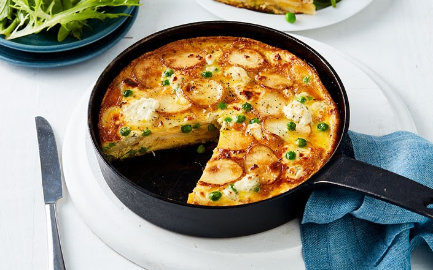

Excess Food
Quick Recipe
Potato & Pea Frittata

Ingredients
- 6 baby Red Royale or baby white potatoes, thinly sliced
- 1 cup (120g) frozen peas
- 8 Coles Australian Free-Range Eggs
- 80g goat’s cheese, crumbled
- 120g pkt Coles Australian 4 Leaf Salad
Methods
- Heat a greased 20cm (base measurement) ovenproof non-stick frying pan over medium heat. Add one-quarter of the potato. Cook for 1 min each side or until light golden and tender. Transfer to a plate. Repeat in 3 more batches with remaining potato.
- Meanwhile, cook the peas in a medium saucepan of boiling water until tender. Drain well.
- Lightly whisk the eggs in a medium bowl. Season
- Preheat grill on medium. Arrange half the potato over the base of the frying pan. Top with half the peas and half the goat’s cheese. Continue layering with the remaining potato, peas and goat’s cheese. Pour over the egg and gently swirl the pan to cover the potato mixture. Cook over medium heat for 6 mins or until almost set.
- Cook under grill for 5 mins or until just set. Cut into wedges. Serve with salad leaves.